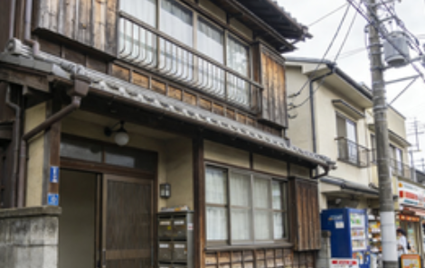

左京区（Sakyo-ku）賃貸情報

左京区は京都大学・同志社大学・立命館大学などの有名学府が集まる文教地区で、若者の活気にあふれるエリア。出町柳駅周辺は学生街として発展しており、コンビニエンスストア・書店・カフェ・居酒屋などが密集して生活利便性が抜群。
鴨川沿いのエリアは特に人気が高く、春には桜、夏には川辺の納涼が楽しめる景観の良い物件が多い。ただし京都大学近隣の物件は需要が高いため、空きが少なく賃料もやや高めに設定される傾向がある。また北山地区は高級住宅街として知られ、広い敷地の一戸建てやマンションが多い。
左京区の特徴
- 特徴：文教地区で学生層が多く、鴨川沿いの景観が魅力
- メリット：生活利便性が高い・若者向けの施設が充実・自然環境が良好
- デメリット：人気エリアは賃料高騰・学生街は夜間に騒音が発生する場合がある
- 賃料例：ワンルーム約55,000円〜、1K約65,000円〜、1LDK約90,000円〜、一戸建て約250,000円〜
推奨物件タイプ

出町柳駅徒歩5分 ワンルーム：約58,000円。2階建ての木造アパートで、南向きの部屋で採光が良い。近隣にスーパーとコンビニがあり、学生に最適な立地。
京都大学桂川キャンパス近隣 1K：約68,000円。築浅のマンションで、エアコン・洗濯機・冷蔵庫などの家電が付属。駅まで徒歩8分で通学に便利。
鴨川沿い 1LDK：約100,000円。高層階の物件で川の景色を楽しめる。バルコニー付きで、シングルファミリーやカップルに人気。